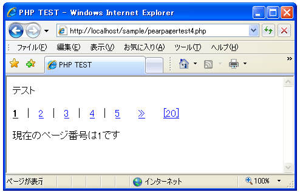
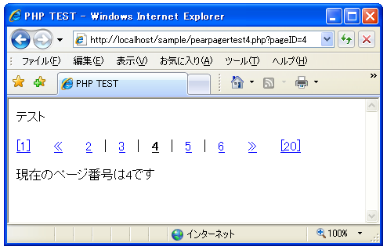
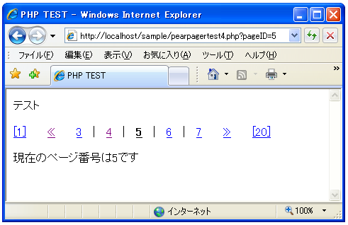
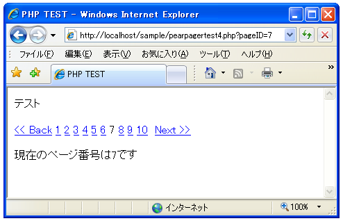
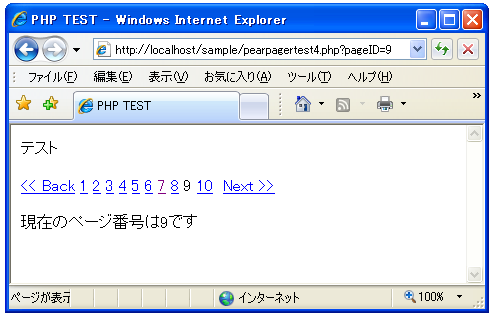
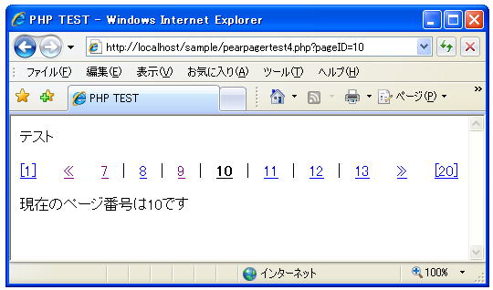

動作モードを指定する(ジャンプ型、スライド型)
ナビゲーションリンクの表示をどのように行うのかに関する動作モードを指定する方法を確認します。動作モードはジャンプ型とスライド型の2つがあります。
動作モードの指定はPagerクラスのオブジェクトを作成する時に指定する「mode」オプションで指定します。指定できる値は「Jumping」か「Sliding」です。デフォルトは「Jumping」です。
$options = array( "mode" => "Sliding" ); $pager =& Pager::factory($options);
動作モードに「Sliding」を指定した場合、ナビゲーションリンクの中央に現在表示されているページ番号が表示されます。次の画像は実際に「Sliding」モードを指定した場合です。

ナビゲーションリンク上で「4」をクリックして下さい。

ナビゲーションリンクの中央に現在のページである「4」が表示されています。では同じように「5」をクリックして下さい。

ページが「5」に移動してもナビゲーションリンクの中央には現在のページである「5」が表示されます。このように動作モードを「Sliding」に指定した場合には常に中央に現在のページが表示されます(先頭付近及び最後付近では異なります)。
なお同じプログラムで動作モードを「Jumping」に設定した場合は次のようになります。


「Jumping」モードの場合はページを移動してもナビゲーションリンク自体の表示位置は変わりません。
Slidingモードの時のdeltaオプション
なお「Sliding」モードに設定した場合に「delta」オプションを使ってナビゲーションバーに表示されるページ番号の数を指定した場合には、「delta」で指定した値の数だけ前後にページ番号を表示します。
例えば「delta」に「4」を指定すると現在のページを表示する中央の前後に4つずつページ番号を表示するため合計で9個のページ番号を一度に表示するようになります。
「Jumping」モードの場合は「delta」オプションで指定した値の数だけページ番号を表示します。動作モードによって「delta」オプションの解釈が異なりますので注意して下さい。
サンプルプログラム
では簡単なサンプルで実際に試してみます。
<html>
<head><title>PHP TEST</title></head>
<body>
<p>テスト</p>
<?php
require_once("Pager/Pager.php");
$totalItems = 100;
$perPage = 5;
$options = array(
"totalItems" => $totalItems,
"perPage" => $perPage,
"delta" => 3,
"mode" => "Sliding"
);
$pager =& Pager::factory($options);
$navi = $pager -> getLinks();
print($navi["all"]);
$currentPageID = $pager -> getCurrentPageID();
print("<p>");
print("現在のページ番号は".$currentPageID."です");
print("</p>");
?>
</body>
</html>
上記をWWWサーバに設置しブラウザで見てみると下記のように表示されます。

上記は「delta」オプションに「3」を指定しているので中央の前後に3つずつのページ番号が表示されています。
( Written by Tatsuo Ikura )

著者 / TATSUO IKURA
初心者～中級者の方を対象としたプログラミング方法や開発環境の構築の解説を行うサイトの運営を行っています。